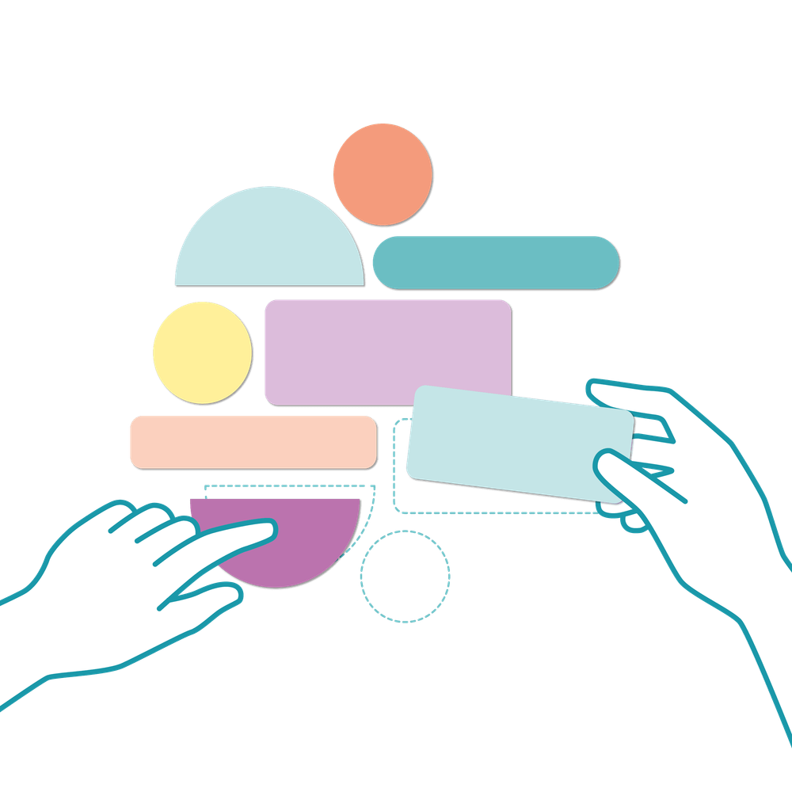

Mit der Academy erhaltet ihr im Business-Plan praxisnahe Lernmodule rund um Facilitation und wirksame Transformation.
Gemeinsam mit 9 Spaces zeigt Plan International Deutschland, wie wertebasiertes Arbeiten Orientierung gibt – nach innen wie nach außen.

Dieses Tool hilft euch dabei, durch einheitliches Vokabular mehr Klarheit und Ergebnisorientierung in Meetings zu bringen.
Dieses Tool hilft euch dabei, euch verständlicher auszudrücken.
Dieses Tool hilft euch dabei, typische Verhaltensmuster in Meetings zu reflektieren und zu ändern.
Ein Tool, das dir dabei hilft, nur noch in nützlichen Meetings zu sitzen